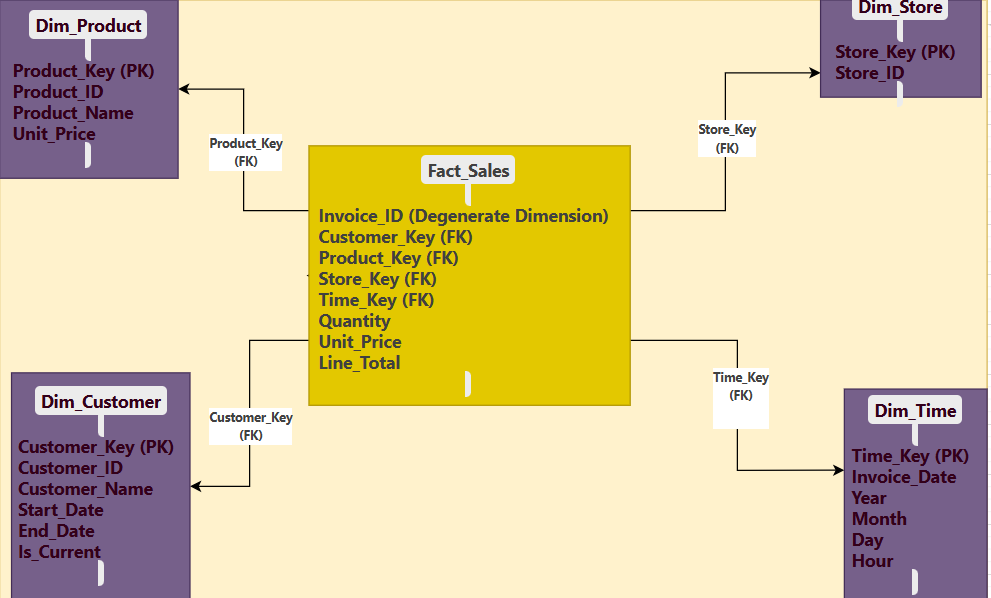

Slack Id Adordev
This assignment involves designing an end-to-end dimensional model for a mid-sized retail company based on a sample invoice dataset. Without explicit business requirements, we reverse-engineer the model from the data, focusing on dimensions like Customer, Product, Time, and Store. The solution supports analytical reporting, drill-down capabilities, historical tracking, and scalability, aligning with inferred objectives of analyzing sales trends, customer behavior, and store performance.
Analyzing the sample invoice dataset reveals key business entities that can be modeled as dimensions:
Customer_ID (e.g., C001) and Customer_Name (e.g., "John Smith"). This captures who is purchasing, enabling customer-centric analysis.Product_ID (e.g., P1001), Product_Name (e.g., "Wireless Mouse"), and Unit_Price (e.g., 25.00). This describes what is sold, critical for product performance insights.Invoice_Date (e.g., "2025-03-15 09:15:00"), with attributes like Year, Month, Day, and Hour. This supports temporal analysis of sales trends.Store_ID (e.g., S01), representing sales locations for store-level reporting.Invoice_ID (e.g., INV001) acts as a degenerate dimension, a transactional identifier without additional attributes.These dimensions are inferred from the dataset’s structure, reflecting the retail context of sales transactions.
The fact table granularity is set at the invoice line-item level, where each row represents a single product sold in a transaction (e.g., INV001 has two rows: one for "Wireless Mouse," another for "Mechanical Keyboard").
Line_Total or Quantity across dimensions (e.g., total sales by store or product).This granularity ensures flexibility for both operational and strategic reporting.
A star schema integrates the fact table with conformed dimensions for simplicity and query efficiency.
Sales_Fact| Attribute | Description |
|---|---|
Sales_Key (PK) |
Surrogate key for uniqueness |
Customer_Key (FK) |
Links to Customer_Dim |
Product_Key (FK) |
Links to Product_Dim |
Store_Key (FK) |
Links to Store_Dim |
Time_Key (FK) |
Links to Time_Dim |
Invoice_ID (Degenerate) |
Transaction identifier (e.g., INV001) |
Quantity |
Units sold (e.g., 2) |
Line_Total |
Revenue per line item (e.g., 50.00) |
Customer_Dim
Customer_Key (PK)Customer_ID (e.g., C001)Customer_Name (e.g., "John Smith")Start_Date, End_Date (for SCD)Product_Dim
Product_Key (PK)Product_ID (e.g., P1001)Product_Name (e.g., "Wireless Mouse")Unit_Price (e.g., 25.00)Effective_Start_Date, Effective_End_Date (for SCD)Store_Dim
Store_Key (PK)Store_ID (e.g., S01)Store_Name (assumed, e.g., "Downtown")Time_Dim
Time_Key (PK, e.g., 202503150915)Date (e.g., "2025-03-15")Year, Month, Day, Hour (e.g., 2025, "March", 15, 09)Invoice_ID is a degenerate dimension, stored directly in Sales_Fact rather than a separate table. This simplifies the schema while allowing grouping by invoice (e.g., total revenue for INV001), aligning with reporting needs without adding complexity.

Attributes like Unit_Price (in Product_Dim) and Customer_Name (in Customer_Dim) may change over time, requiring an SCD strategy.
Unit_Price. Add Effective_Start_Date, Effective_End_Date, and a new row for each price change (e.g., "Wireless Mouse" from 25.00 to 30.00 on 2025-04-01).Customer_Name changes (e.g., "John Smith" to "John A. Smith"), tracking historical purchases.Store_Name, overwriting updates as location history is less critical.SCD Type 2 is chosen for Product_Dim and Customer_Dim to support historical tracking, aligning with forecasting needs.
Invoice_Date (e.g., > last load date), reducing overhead.Customer_Key, Product_Key, etc., for performance and SCD support.Customer_Name (e.g., "John Smith" vs. "john smith") and validate Line_Total.Invoice_ID + line item entries.[Invoice CSV] --> [Extract: Load Rows] --> [Stage: Validate Line_Total, Dedupe]
|
v
[Transform: Parse Invoice_Date, SCD Type 2, Assign Keys] --> [Load: Dimensions → Sales_Fact]
Year → Month → Day → Hour (e.g., 2025 → March → 15 → 09).Category → Product_Name (e.g., "Electronics → Wireless Mouse").Region → Store_ID (e.g., "East → S01").Sales_Fact by Time_Key (e.g., monthly) for faster queries.Customer_Key, etc.) and composite keys (e.g., Store_ID + Time_Key).Store_Name exists in a master list.This model delivers:
Line_Total aggregations.It meets all business objectives with a robust, scalable design.